Liminal Objects at DesignTide 2025
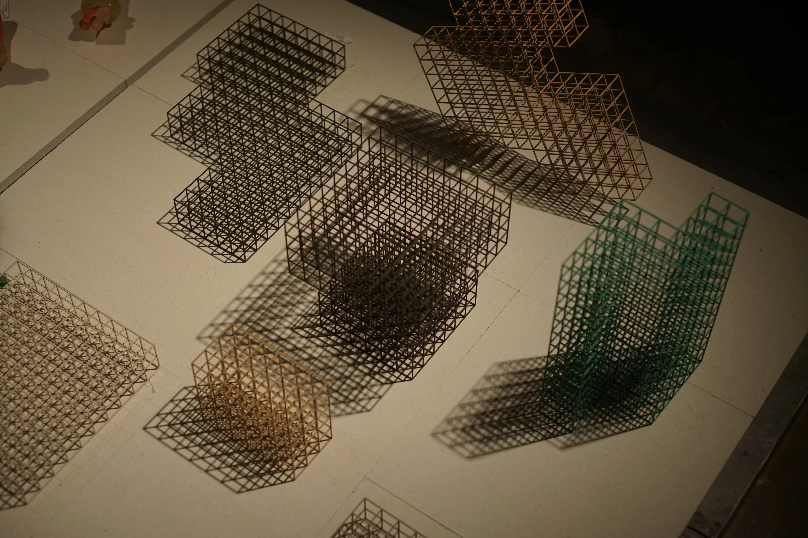
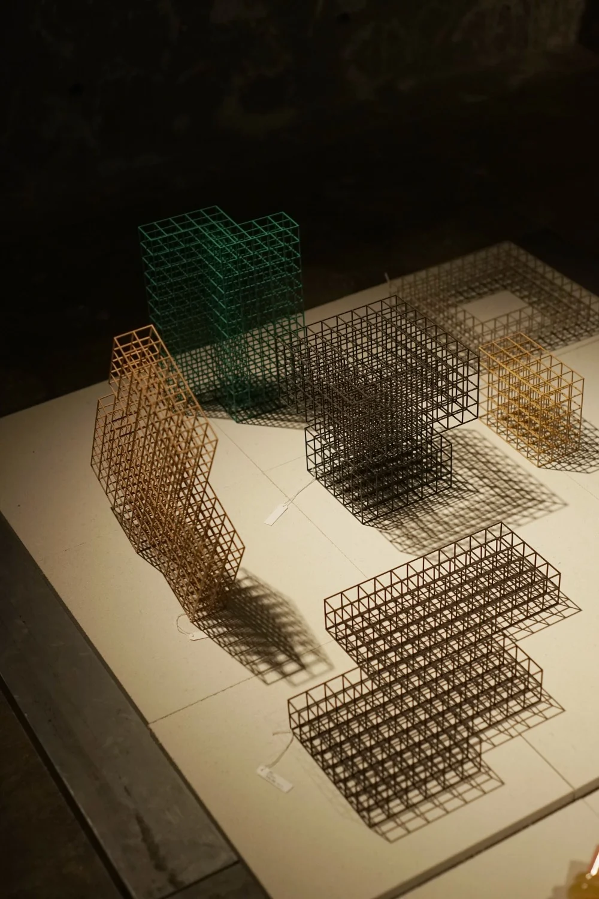
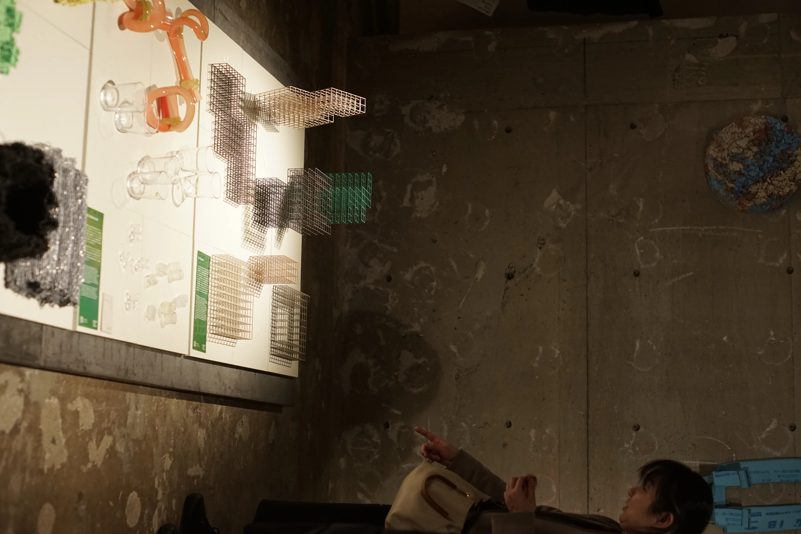
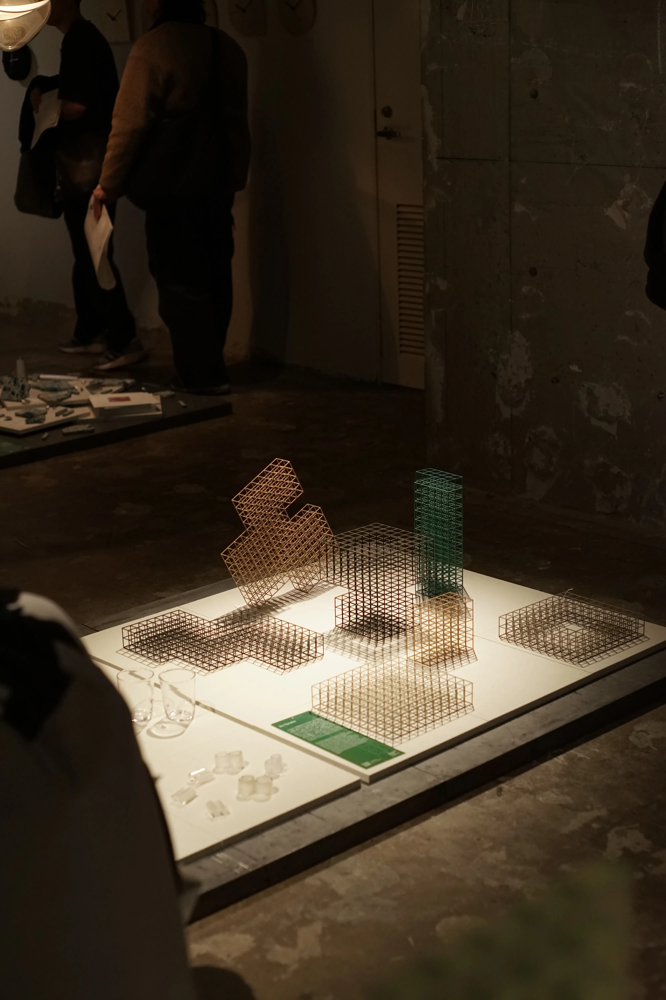
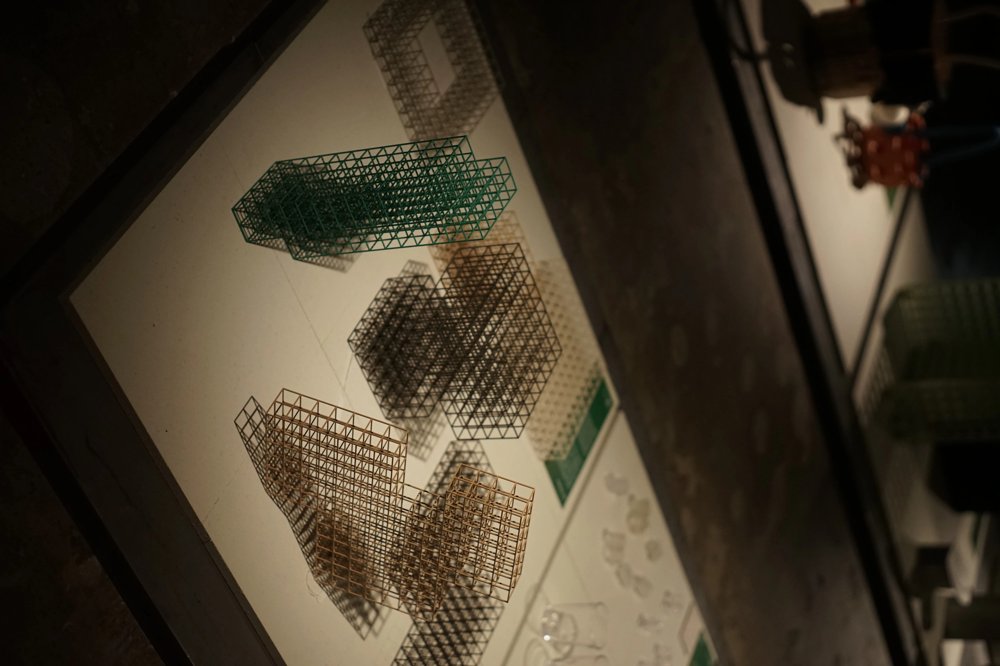
Liminal Objects at Information
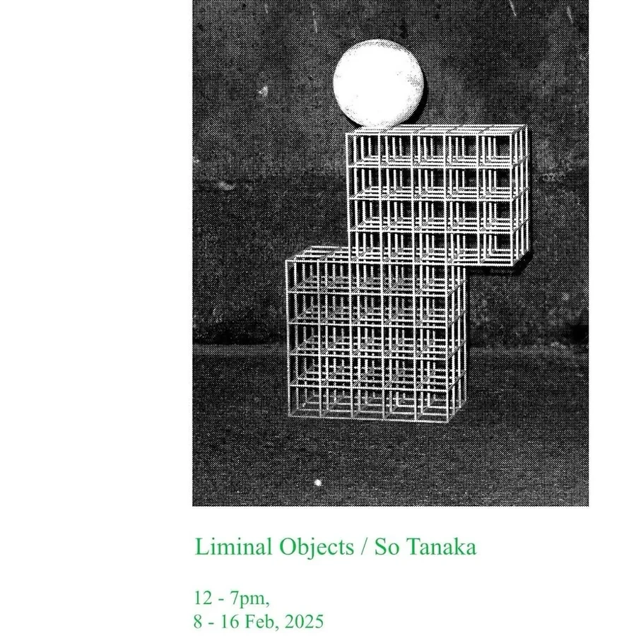
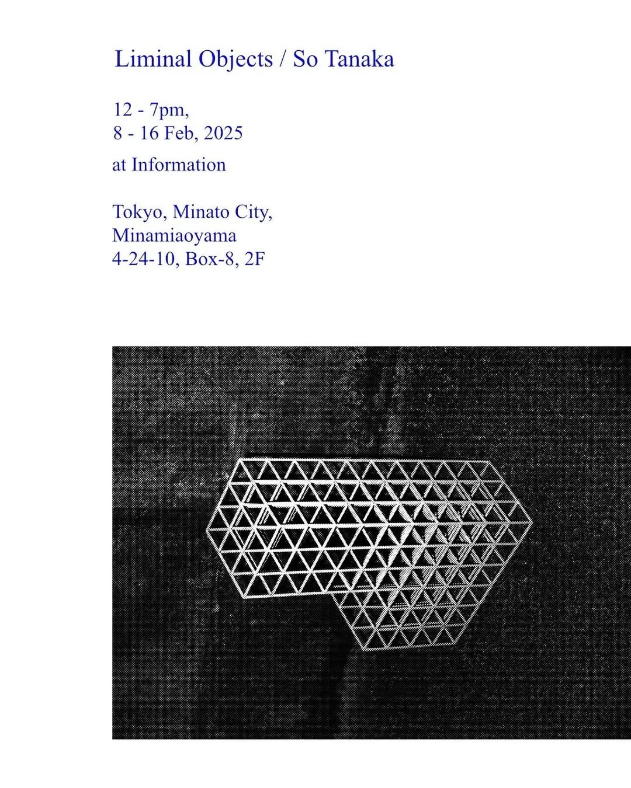
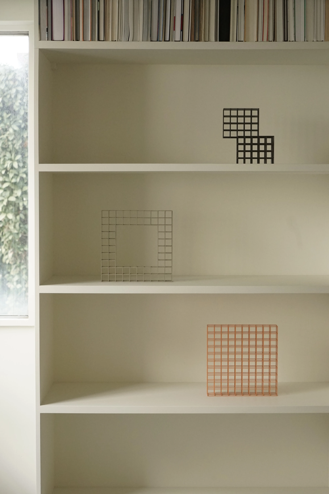


Exhibition Let a colored paper swim in clouds at Moro Craft
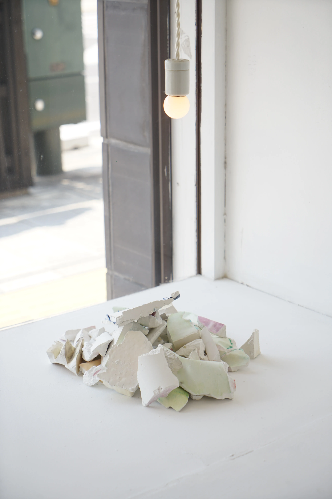
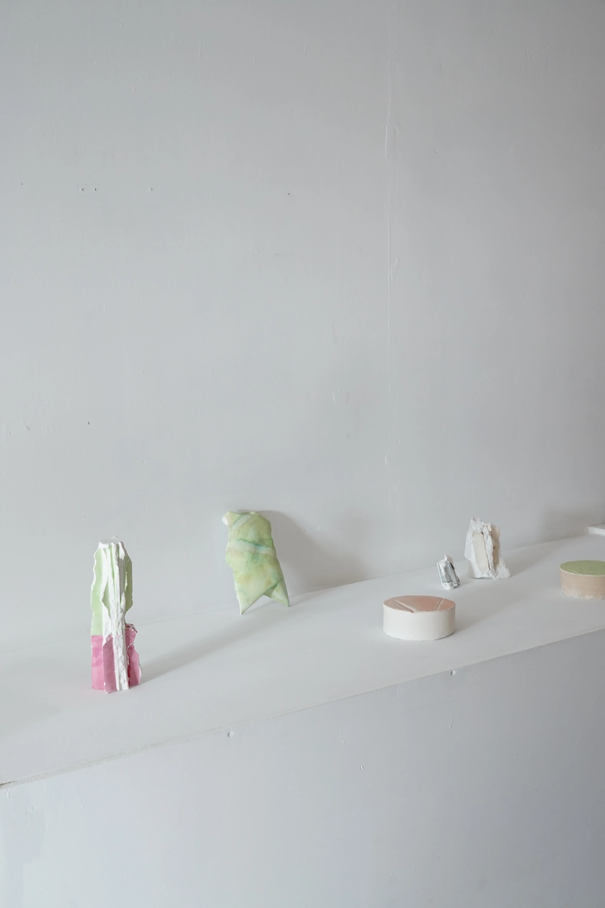


Vnsh at Designart 2023
So Tanaka presents his new lighting series, "vnsh."
Humans find purpose and meaning in phenomena and natural objects, segmenting the world. Light gives us a sense of hope and security, and we value its ability to illuminate and make visible, using it in a variety of ways. However, while some things are made visible by the effects of light, others disappear from view. The inside of a river reflecting the sunlight during the day is invisible. The moment lightning strikes, the surroundings are enveloped in white darkness.
"vnsh" invites viewers to transcend these stereotypes. By incorporating LEDs into a 5mm diameter pipe with slits, the lighting fixtures illuminate their surroundings while simultaneously disappearing into the light themselves. By transcending linguistic perception and reinterpreting things sensorily, the works create a tranquil yet surprising space.
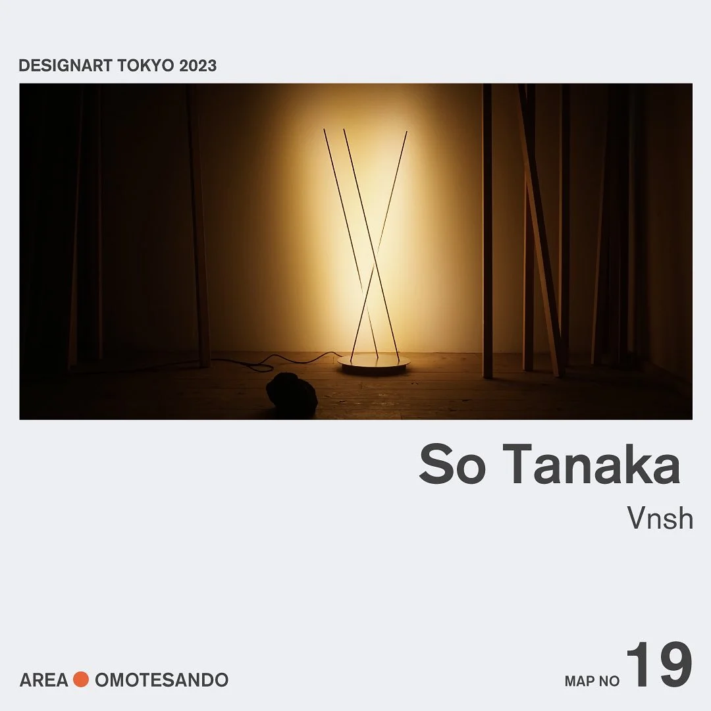
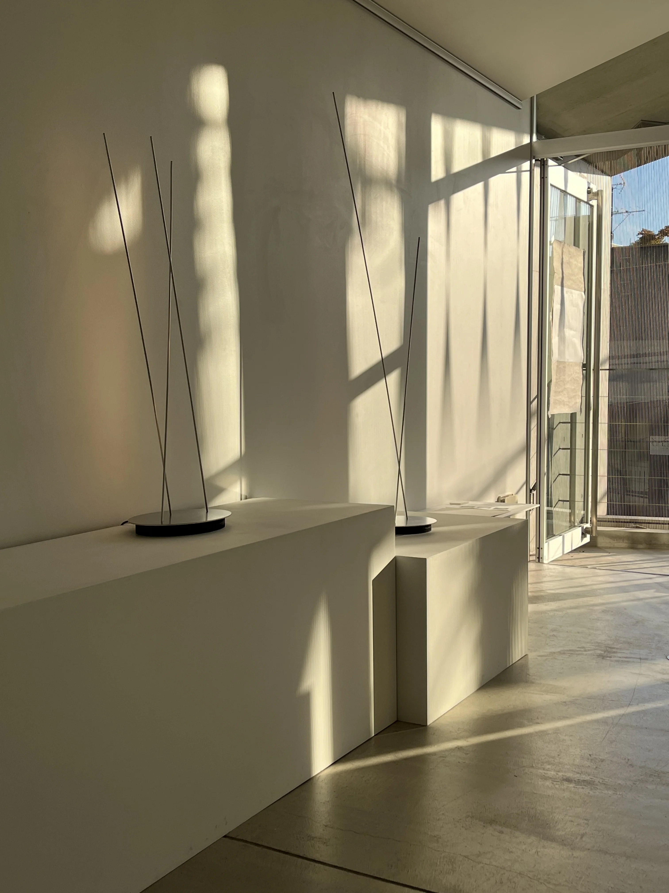